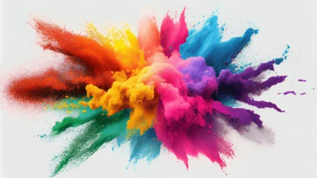
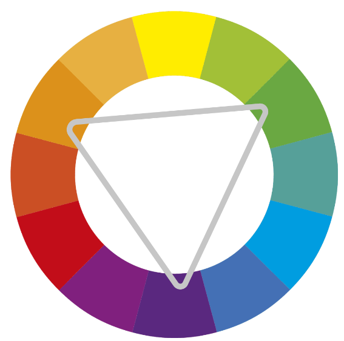

A história das Cores

Acredita-se que os artistas inventaram pigmentos usando uma combinação de minerais, gordura animal e carvão queimado há 40.000 anos. Eles trituravam pedras até virarem pó e misturavam com óleo ou água para fazer tinta. Antes de serem embutidas em latas ou nos computadores, era isso: as cores vinham da natureza.
Saiba mais clicando aqui
As cores no Design

A combinação de formas e cores são cruciais para a harmonização dos elementos seja de ambientes, imagens ou logotipo, influenciando até mesmo em nosso humor. Quer saber mais? Clique aqui
O que a cor que você veste pode dizer sobre você
Você já ouviu falar sobre a Teoria das Cores? Ela diz que as cores e tonalidades são repletas de simbolismos e influenciam diretamente o nosso cérebro em relação à percepção das sensações, lembranças e sentimentos. Isso também pode impactar na forma como nos vestimos em nosso dia a dia. Quer saber mais? Clique aqui